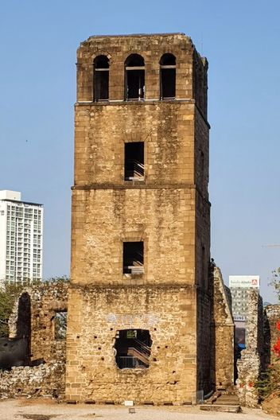

Archaeological Site
Panamá Viejo
Founded in 1519 as the first European settlement on the Pacific coast of the Americas, and destroyed by pirates in 1671.
- Cathedral ruins and the climbable bell tower
- Convent foundations and colonial cisterns
- The Plaza Mayor site museum